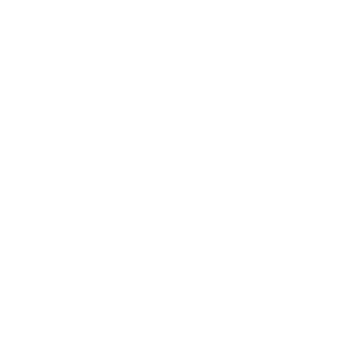
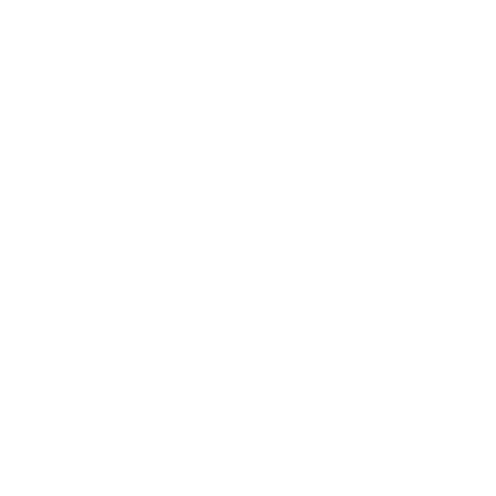
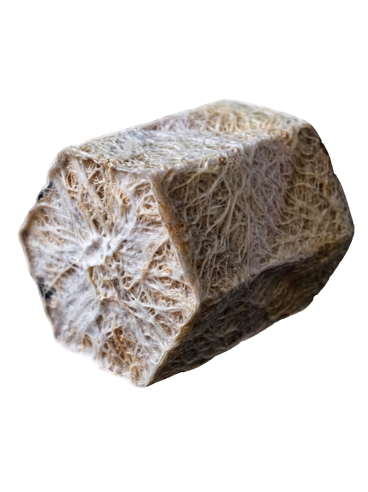

Z_BRICK
ESFERA // CRISTAL
PULSOR
000000



RESONANCIA
000000
sincronizando_frecuencias...
SISTEMA DE BIOCONSTRUCCIÓN
Z_BRICK
Bioladrillos de micelio sintetizado con residuo de amero y estimulados mediante el bajo la resonancia de los .

PULSOR
protocolo de encriptación biocinética _puls
p_pace
Caminar
- > impulso
- > surco
- > vibración
[ play beat ]
u_under
Caer
- > empuje
- > raíz
- > equilibrio
[ play beat ]
l_lift
Levantar
- > ascenso
- > núcleo
- > tensión
[ play beat ]
s_surge
Saltar
- > carga
- > proyección
- > destello
[ play beat ]